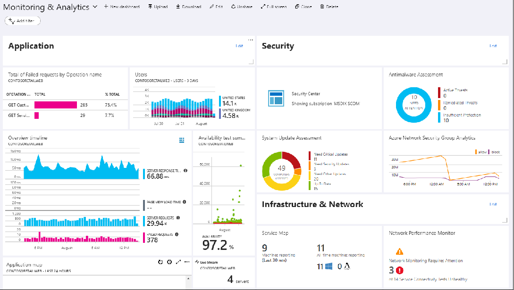
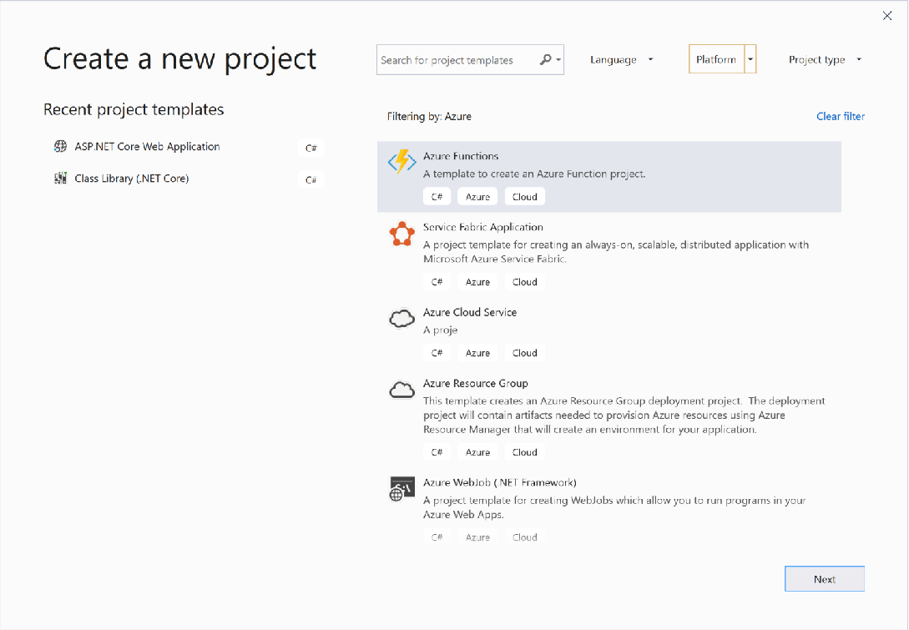
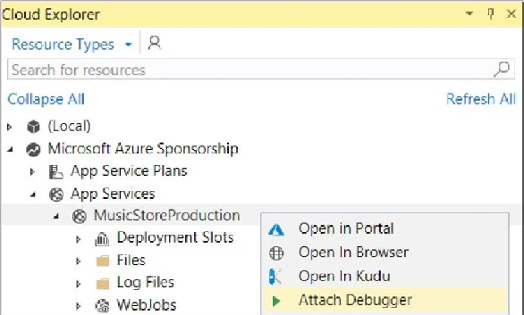
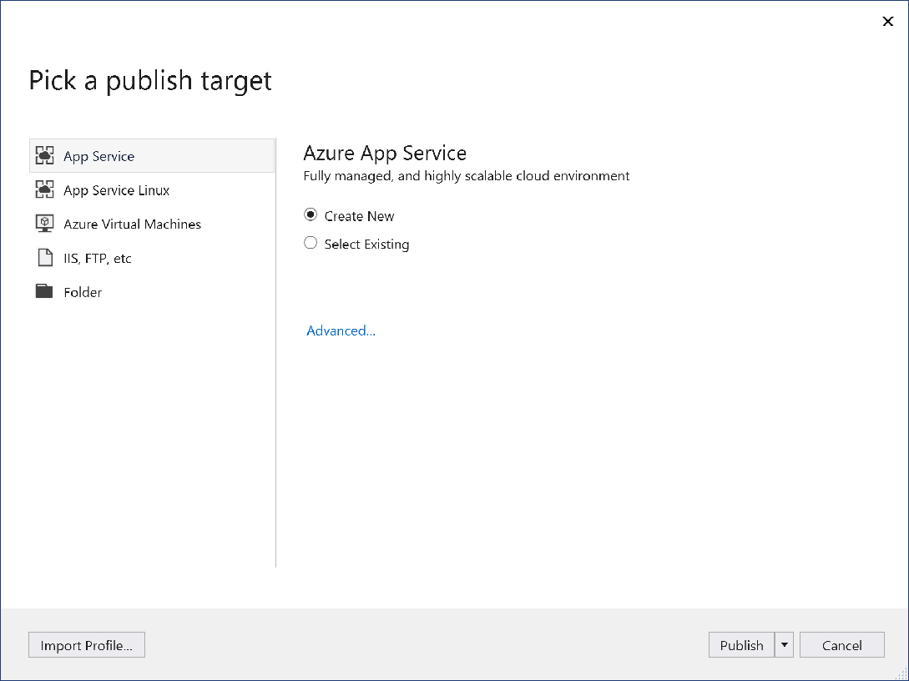
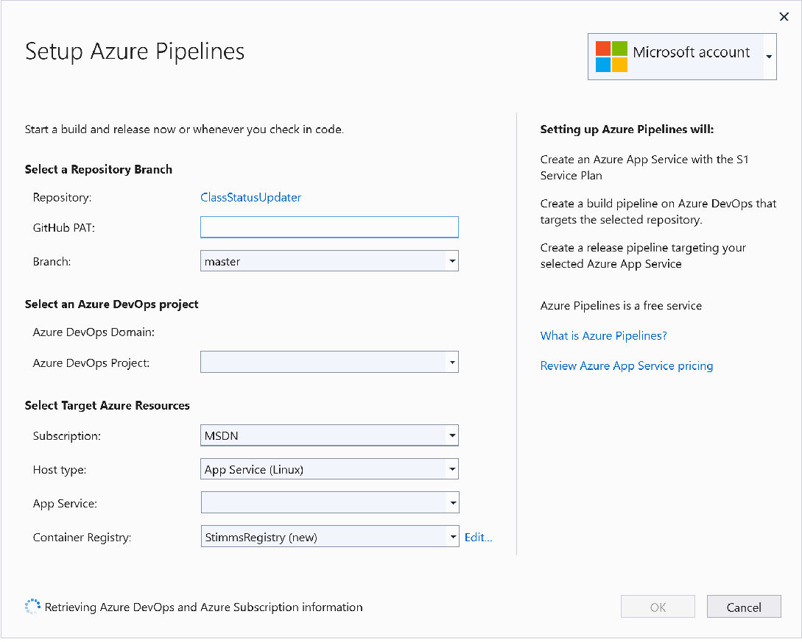
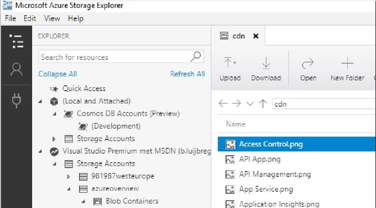
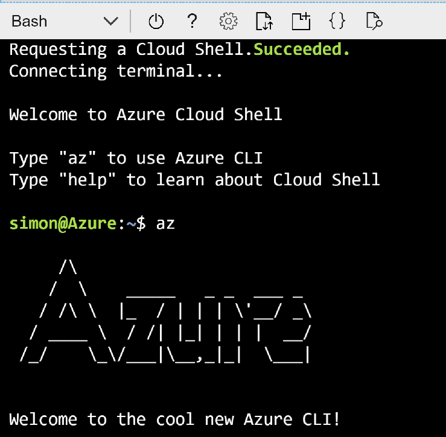
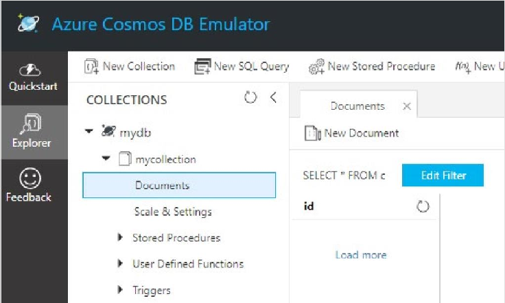
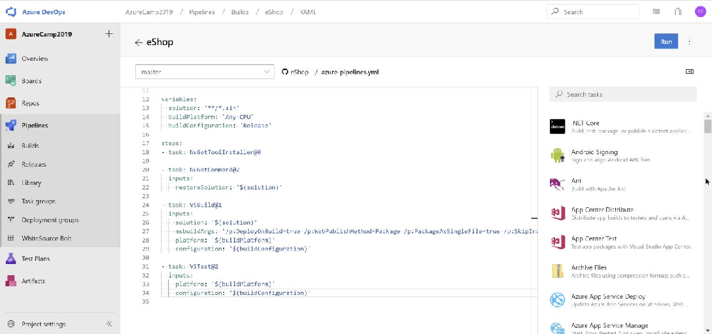
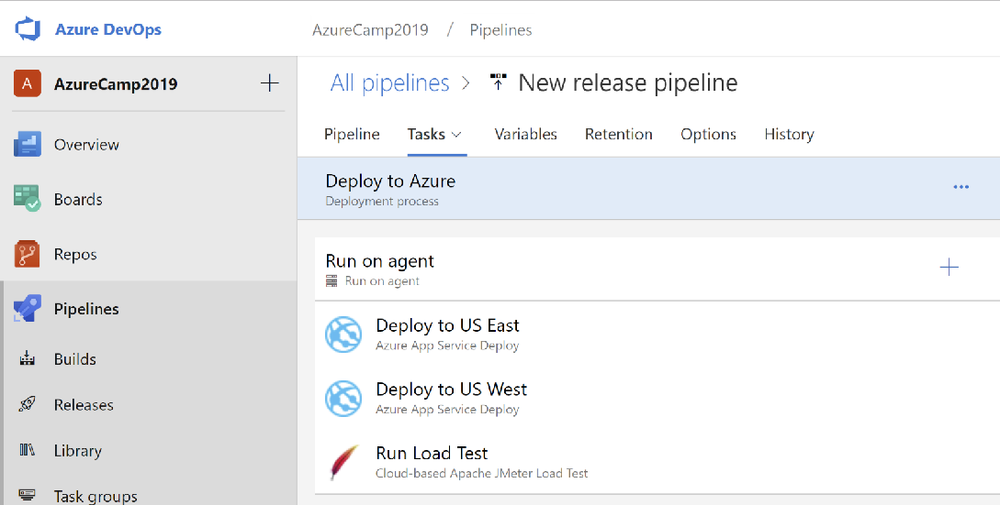

Azure Quick Start Guide for .NET Developers
4 What can Azure do for you?
7 Running your .NET applications in Azure
7 Azure App Services
8 There are several different types of App Service apps.
9 Azure Functions
10 Azure Logic Apps
11 Azure Virtual Machines
12 A word about microservices and containers
13 Which frameworks and technologies can you use in which Azure service?
14 Storing your data in Azure
15 Azure SQL Database
16 Azure Cosmos DB
17 Azure Storage
18 Let’s explore the different types of Azure Storage:
19 Azure Databases for MySQL, PostgreSQL, and MariaDB
20 Azure SQL Data Warehouse and Azure Data Lake Store
21 Azure Active Directory
22 Azure Key Vault
22 Managed Service Identity 23 Azure Advisor
23 Other Azure services
23 Enhance your application with performance
23 Machine Learning
24 Internet of Things (IoT)
24 Data Analytics 25 Messaging
25 Media Services 25 Monitoring
27 Visual Studio and Azure
28 Cloud Explorer
29 Publish to Azure
31 Snapshot Debugger
32 Azure Storage Explorer
33 Azure Storage Emulator
33 Azure Command-Line Interface 35 Azure Functions Core Tools
35 Cosmos DB Emulator
36 Azure DevOps for build and deployment
39 Keep learning with an Azure free account
40 About the team
Azure for .NET developers If you are a .NET developer or architect who wants to get started with Microsoft Azure, this book is for you! Written by developers for developers in the .NET ecosystem, this guide will show you how to get started with Azure and which services you can use to run your .NET applications and store your data in a more efficient and secure way.
Before we dive in, let’s take a moment to see what the cloud, and Microsoft Azure in particular, can do for you.
What can Azure do for you? Azure provides services that can help you accomplish many things. These range from the mundane—such as adding search functionality to your application or spinning up a new SQL database to connect to your recent .NET app—to more exotic projects such as implementing continuous integration (CI) and continuous deployment (CD) workflows. You also can automatically tune your database or set up push notifications to mobile devices, easily and quickly. These are just a few examples of some common projects that developers have repeatedly had to create for themselves but that are now available as a service. And you can use these services with little effort—almost like flipping a light switch! You can then focus on the pieces of your application that make it unique—the features that provide real added value for your users.
Besides services, Azure offers compute resources in the form of virtual machines (VMs), containers, databases, web app services, and mobile services. You can use these to host applications or to provide a complete infrastructure for your users, most of which you can do through Visual Studio.
The power of the cloud is that services and resources are incredibly robust and resilient. It is very unlikely that they will fail to run, because the cloud is smart and self-healing. With Azure, there are datacenters all over the world, filled with tens of thousands of servers. If one server fails, another takes over. If an entire datacenter were to fail (a highly unlikely scenario), another would take over. All this is possible because of the massive scale of the cloud.
One of the most compelling arguments in favor of the cloud is that you can scale up your services and resources almost infinitely, with just a few clicks of a button. You can’t do that with on-premises resources unless you’re prepared to spend enormous sums of money on capital equipment which would remain largely idle and staff to administer it all. You can scale globally without having to build data centers around the world by putting your services anywhere in the world eliminating latency and providing a highperformance experience to your users, regardless of where they are. It also means that you can keep your data where you need it to be, observing data residency requirements.
Equally important, when you use cloud resources, you can scale back your services and resources when there is no longer high demand. This allows you to scale up and down even during the course of a normal day keeping applications economical and performant.
In addition to massive scalability, off-the-shelf intelligent services, and pay-per-use efficiency, the cloud offers increased security. The cloud is used by millions of people, 24x7, worldwide. Of course, it is also attacked by many people. Reputable and experienced cloud providers like Microsoft recognize the usage patterns of normal users and those of malicious actors. This means we know how to protect against both the most common and most unique attacks out there. Intelligent monitoring tools, machine learning algorithms, and artificial intelligence give cloud providers the ability to detect attacks in real time and stop them in their tracks.
Decades of experience in security and massive-scale traffic, combined with top industry security expertise, make the cloud a much more secure environment than any onpremises datacenter.
More info To read more about how Azure secures your applications and data, read the official Azure Security blog, Azure Security Overview,and how to get started with Azure Security
. We’ve briefly explored reasons to begin your migration to the cloud and Microsoft Azure. Now, let’s examine which Azure services are useful for you for running and securing your applications and storing your data.
Getting Started with Azure services Let’s explore some of the services that you can use for running your applications in Azure, storing your data in Azure, and securing your application with Azure.
Running your .NET applications in Azure One of the first decisions that you need to make when you start with Azure is which service(s) to use to run your applications in Azure. There are many options. Let’s start by laying out which Azure services are most suitable for which application types in Table 1.
Table 1: Which Azure services are best suited for which types of applications?
App Service Mobile Apps
Azure Kubernetes Service (AKS)
App Service Web Apps
Azure Functions
Virtual Machines
Container Instances
Logic Apps
Monolithic and N-Tier applications
*
*
Mobile app back end
Microservice architecturebased applications
Business process orchestrations and workflows
* For lifting and shifting existing applications to Azure.
Azure App Services One of the easiest and most powerful ways to host your applications in Azure is in Azure App Service. Azure App Service is a group of services that takes care of hosting your application and abstracting away the complexities of the operating system and infrastructure. They are highly available by default and will stay up and running for at least 99.95% of the time.
They share powerful features like automatic scaling, zero-downtime deployments, and easy authentication and authorization. They also allow you to debug your application while it is running in production (with the Snapshot Debugger) and work very well with Application Insights, which you can use to monitor every aspect of your app, from performance to usage.
There are several different types of App Service apps. Azure Web Apps Running a .NET web application in Azure is very easy in Azure Web Apps. Web Apps act as a web server as a service, like IIS. And you can simply deploy your ASP.NET or ASP.NET Core application with Visual Studio to Web Apps and run it. These can be websites, APIs, or any other HTTP-driven application including Node.js, Python and Java applications.
Once your application runs in an App Service web app, you can scale it up or down, add easy authentication, use deployment slots, enable continuous deployment, and use any of the other App Service features. By default, your application is available on the internet, without you needing to set up a domain name or configure DNS settings, although you can do that.
Try it now- Get started by creating an ASP.NET Core web app in Azure
Containers on App Services Developers who want the power of App Services but need to maintain a higher level of control over their environments can also run containers. Both Linux and Windows containers are supported. You can deploy your own containers from the Azure Container Registry, a private Docker registry or public containers from the Docker Hub. This allows you to run a wide range of pre-configured applications from WordPress to Redis which can be deployed either as single containers or as part of a multi-container application. Windows container support also helps you migrate existing ASP.NET apps and WCF services that need access to the Windows OS, install custom components, or use the Global Assembly Cache (GAC).
Azure Mobile Apps If you are building mobile applications, you will need a back end that the mobile app connects to. Usually, this is some sort of API that your app can use to retrieve and store data. Azure Mobile Apps provides you with such a back end. You can write it in C# or use any of the Quickstart applications.
A mobile back end that runs in Azure Mobile Apps provides unique capabilities. For instance, you can use offline sync, which enables the mobile app to continue working when there is no connection to the back end and sync changes once the connection is restored. And with push notifications you can send notifications to the mobile apps using C# code, regardless of the platform it runs on (iOS, Android, Windows). In addition to these unique features, Mobile Apps shares all the other features of Azure App Service.
Get started by creating an Android app with an Azure mobile app back end.
Azure Functions (also known as serverless compute) Azure Function apps enable you to create Azure Functions in C# and many other languages in Visual Studio and other IDEs and editors. Each Functions app contains one or more Azure Functions and provides integration with authentication and deployment slots.
The Azure Functions that run in Azure Function apps are small pieces of code that you write, without you having to worry about the underlying infrastructure or about scaling. Many refer to this deployment model as Functions as a Service (FaaS).
Function applications can be simply triggered by a wide variety of events originating both inside and outside of Azure. HTTP triggers allow web requests to be served by a function app. Event Grid events can trigger Azure Functions when changes are made to Azure resources such as the container registry and virtual machines.
Here is an example: You write an Azure Functions app that executes every time a new image file is uploaded to Azure Storage. You then take that image, rename it, and output it to another Azure Storage account.
This is very easy to do. You just write the code to rename the image. Azure Functions takes care of getting the input image when the function is triggered. And it takes care of writing the image to the other storage account. It takes care of all the plumbing, and you just write the code.
Azure Functions even handles scaling for you. So it doesn’t matter if there are 1,000 images that trigger the function at the same time. Azure Functions transparently spins up more functions to deal with it and they go away when the code is done executing. Because of this, you only pay for the code that you execute, not for a service that runs all the time, waiting to be triggered.
Azure Functions are great for executing small pieces of code that perform one or two steps on an input and an output. If you want to perform more steps of a larger process, you can use Durable Functions.
Durable Functions provide a stateful experience on top of a series of Azure Functions. They enable complex patterns such as scatter/gather and function chaining. A Durable Function orchestration may be as simple as coupling together two functions, one after another, or as complex as coordinating tens of thousands of function calls over weeks.
Get started by creating your first Azure Function with Visual Studio.
Azure Logic Apps Durable Functions are a fantastic orchestration tool for developers who are comfortable with writing every step of the process inside a series of Functions. For those looking for a lower code solution Logic Applications may be better. With Azure Logic Apps, you can orchestrate a process just by weaving API calls together in a visual designer in Visual Studio or the Azure portal. Visual Studio offers a specific Logic Apps project template to get started.
A logic app has a trigger, just like an Azure function does. This can be an outside trigger, like when a new blob is added, or a certain text is tweeted. Or it can be a manual trigger or a trigger on a schedule such as every 15 minutes.
Once triggered, a logic app takes its input and calls APIs with it to complete a process. You just click this together by choosing APIs from a large list of available ones and choosing the input and output for those APIs. Azure Functions can also be used for APIs in a logic app. And you can use your own ASP.NET Core APIs.
Here’s anexample: A logic app gets triggered by a new blob that is written in Azure Blob storage. It takes the Blob input, which is an image file, and resizes the image by calling an Azure function that does just that. Next, it takes the resized image and writes it to another storage account. And finally, it calls the Office 365 API to send an email to the administrator that there is a new, resized image available.
Just like Azure functions, logic apps scale automatically, you just create the process. It will trigger as many times as it is needed and always executes the complete process and has reliability features, like retry policies, built in. And because it only runs when it is triggered, you only pay for when it runs—you don’t pay for owning it.
Get started by building your first logic app workflow in the Azure portal.
Note: Azure Logic Apps and Azure Functions work very well with the Azure Event Grid service. Event Grid allows you to subscribe to events, like when something happens in your application, and to push that information as an event that can trigger a Logic App or an Azure Function.
Azure Virtual Machines A very different way of running your application is by taking advantage of Azure Virtual Machines. This is an easy way to get started, because you can lift-and-shift existing applications from virtual machines that you run in your datacenter to VMs that run in Azure. There are many predefined VM images that you can use, like Windows Server 2019 that runs IIS and has ASP.NET installed and preconfigured on it. You can even bring your own software licenses if you already have one (like for SQL Server).
Running your application in a VM doesn’t provide you the features like zero-downtime deployments and easy authentication. You are also responsible for patching the operating system and for making sure that antivirus software is up to date.
On the other hand, it does provide you with the ability to easily scale your VM to a bigger size or automatically scale it down when it isn’t used that much. Virtual Machine Scale Sets allow for scaling out VMs to a large number of nodes and load balancing
work between them. And it offers you the reliability of running something in Azure. It is very unlikely that your VM will stop running, and Microsoft guarantees this uptime with a comprehensive SLA.
And if you’re not ready to run your production VMs in Azure you can still take advantage of streamlined DevOps and testing with Azure DevTest Labs.
Get started by Creating a Windows virtual machine with the Azure portal.
A word about microservices and containers You can run your applications in containers, which are very lightweight and start and stop in seconds. Containers isolate your application and its dependencies in a way that guarantees that you’ll never run into library version conflicts. They can be based on numerous popular Linux distributions or Windows Server so no matter the platform your application uses it can run in a container.
A popular approach for containers is to use them to run a microservices architecture. This means that you create many small, isolated, services that each have their own function and each have separate development and deployment lifecycles. Containers can also be used to lift and shift existing applications to run at scale in the cloud.
Azure provides several services to support running a microservices architecture in containers. Running the increasingly popular orchestration engine Kubernetes, Azure Kubernetes Service (AKS) provides a powerful tool to run anything from a handful of containers to hundreds of thousands of them. AKS can all run and orchestrate containers. Orchestration of containers is quite different from orchestrating a process, like Logic Apps does. Orchestrating containers means that you manage their lifecycles. Provision new ones, scale up or down, manage failures, and so on.
You can learn more about microservices by reading:
.NET Microservices Architecture Guidance
Which frameworks and technologies can you use in which Azure service? Now that you know what the options are for running your application in Azure, it is extremely useful to know which version of .NET you can run in these services and what kind of containers they support. Table 2 explains this by showing which framework and container types you can use in which services in Azure.
Table 2: Which framework and technology can you use in which Azure service
.NET Framework apps |
Web Apps |
Mobile Apps |
Functions |
Azure VMs |
Azure Container Instance |
Azure Kubernetes Service (AKS) |
|---|---|---|---|---|---|---|
.NET Core apps |
||||||
Linux Containers |
||||||
Windows Server Containers |
Storing your data in Azure Data is a particularly important aspect of any modern .NET application, and it comes in all shapes and sizes. Azure provides many types of data stores that can help you maintain and retrieve data in any scenario.
Table 3 shows which data service to use for which scenario.
PostgreSQL, MySQL
SQL Data Warehouse
Data Lake Store
Database Cosmos DB Blob Table File
Relational data
Unstructured data
Semistructured data
Files on disk
Store large data
Store small data
Geographic data replication
Tunable data consistency
Azure SQL Database If you are familiar with .NET, you will likely be familiar with SQL Server. In Azure, you can run your SQL Server workload in Azure SQL Database. This is SQL Server in the cloud. It is the same thing that you run on-premises but it offers a lot of advantages.
You can do (almost) everything with it that you can do with on-premises SQL Server. And, in fact, new SQL Server features are incorporated in Azure SQL Database first and later in the on-premises SQL Server.
You can use Azure SQL Databases with your favorite tools, like Azure Data Studio, Server Explorer and SQL Server Data Tools in Visual Studio and SQL Server Management Studio.
Because they run in the cloud, Azure SQL Databases are fully managed, scalable, and high performing. They are automatically backed up and have many advanced features, such as:
• Single-click Geo-replication, which replicates data to other geographical regions in real time, incredibly easily. (Get started with geo-replication.)
• Dynamic data masking, which masks sensitive data for certain users at runtime. (Get started with dynamic data masking.)
• Auditing, which provides a complete audit trail of all the actions that happen to the data. (Get started with Azure SQL Database auditing.)
• Automatic database tuning, which monitors the performance of your database and tunes it automatically. (Get started with Azure SQL Database automatic tuning.)
In addition to all these features, Azure SQL Databases are exceptionally reliable by default. Without configuring anything, transaction log backups are made every 5-10 minutes and differential backups every 12 hours. These backups are stored three times in the local datacenter and three times in another datacenter. And you can restore backups from 35 days ago, depending on the pricing tier that you use.
It is very easy to use Azure SQL Databases from a .NET application. You can, for instance, use the Entity Framework (or Entity Framework Core) to access the database and write and read data to and from it. For the most part accessing data programmatically is no different from accessing data in an on-premises SQL Server.

Get started by creating an Azure SQL Database in the Azure Portal.
Azure Cosmos DB Azure Cosmos DB is a new kind of database that is globally distributed and cloud native. Here are some of its key features:
• A 99.99% SLA (99.999% for read operations) that includes low latencies (less than 10 ms on reads; less than 15 ms on writes).
• Geo-replication, which replicates data to other geographical regions in real time (How to distribute data globally with Azure Cosmos DB).
• Tunable data consistency levels, so you can choose data consistency, enabling a truly globally distributed data system. You can, for instance, choose strong consistency, eventual consistency, or session consistency.
• Traffic management, which sends users to the data replica to which they are closest.
• Limitless global scale. You pay only for the throughput and storage that you need.
• Automatic indexing of data. No need to maintain or tune the database anymore.
In addition to all these features, Cosmos DB offers different APIs with which you can store and retrieve data, including SQL, Gremlin, MongoDB, Azure Table Storage, and Apache Cassandra. Different APIs handle data in different ways. You can use documents as data as well as unstructured tables, graphs, and blobs. You use the API that fits your
needs, and Cosmos DB takes care of the rest. If your application already uses one of these protocols switching to Cosmos DB is as simple as changing a connection string. You benefit from cloud-grade performance, scalability, and reliability, and still use the programming model to which you’re accustomed. You can use Cosmos DB from .NET Framework and .NET Core. For example, you can use its SQL API through the NuGet package Microsoft.Azure.DocumentDB or Microsoft.Azure.DocumentDB.Core (for .NET Core).
Get started with Azure Cosmos DB with the SQL API and .NET Core.
Azure Storage With Azure Storage, one of the most fundamental services in Azure, you can store data in different forms. It is easy to use, fast, and inexpensive. Azure Storage offers several types of storage that you can use for different scenarios. All these storage types share common features like encryption for data at rest, security through shared access signatures, and firewalls and virtual networks.
Azure Storage is also very reliable. By default, data is replicated three times within the datacenter. You can also choose geo-replicated storage, which, in addition to the three local replicas, replicates the data three times to another datacenter. You can create your application in such a manner that it reads from this geo-replicated data, which is close to your users, so that it is geographically high performing.
You can use Azure Storage from your .NET Framework and .NET Core applications by using the WindowsAzure.Storage NuGet package and referencing the specific API that you need, like Microsoft.WindowsAzure.Storage.Blob (for Blob storage) in a using statement in your code.
Azure File storage uses the SMB protocol, which makes it very suitable for lifting and shifting your file server into the cloud. When you have files in Azure Files, you can mount an Azure file share to a VM or even to your own Windows machine, to use as external storage.
Get started with Azure Files.
Azure Disk Storage is a similar service to Azure File but is dedicated to a single machine.
It is available in four different performance levels from Standard HDD to Ultra SSD. The high performance tiers are suitable for heavy I/O workloads such as running SAP HANA or complex analytical models.
Table Storage Azure Table storage is an inexpensive and extremely fast NoSQL key-value store that you can use to store data in flexible tables. A table can contain one row describing an order and another row describing customer information. You don’t need to define a data schema. This makes Table Storage very flexible.
Get started with Azure Table storage.
Blob Storage You can use Azure Blob storage to store large unstructured data—literally, blobs of data. This can be video, image, audio, text, or even virtual hard drive (VHD) files for VMs. Additionally, you can use Blob tiers to reduce your storage costs. By default, blobs are written to the hot tier, which means that they are written and read very fast. You can also put blobs in the cool tier if you have data that is infrequently accessed and stored for at least 30 days. The cool tier is less expensive than the hot tier. And finally, you can store blobs in the archive tier, that is the least expensive. The archive tier is for data
that is rarely accessed and stored for at least 180 days. Reading data from the archive tier can take hours. Blob tiering is a great way to save costs if you are storing large amounts of data.

Get started with Azure Blob storage.
Azure Queue storage is an unusual type of storage in that it is used to store small messages of data, but its main purpose is to serve as a queue. You put messages on the queue and other processes pick it up. This pattern decouples the message sender from the message processor and results in performance and reliability benefits. Azure Queue storage is similar to Microsoft Message Queuing that you can find in Windows.
Get started with Azure Queue storage.
|Note: Azure Service Bus Topics and Queues also provide queuing mechanisms, with slightly different properties than Azure Storage queues.
Azure Databases for MySQL, PostgreSQL, and MariaDB As a .NET developer, you encounter many different open-source database types in your job. Some of them can now be used in a managed version in Azure.
Azure provides MySQL, PostgreSQL, and MariaDB databases as managed databases, which means that you just spin them up and don’t have to worry about any of the underlying infrastructure. Just like Azure SQL Databases and Cosmos DB, these databases are universally available, scalable, highly secure, and fully managed.
Each of these is suited for slightly different use cases, but in general, their functionality overlaps a lot. You would use Azure Databases for MySQL, PostgreSQL, and MariaDB when you are already using one of their on-premises versions and want the advantage of having that run fully managed in the cloud. Migrating apps that use these databases is much easier when the data can remain in its original platform. Azure also provides an out of the box backend for services like WordPress which rely on open source databases.
Get started with Azure Database for MySQL by creating a MySQL server by using the Azure portal.
Azure SQL Data Warehouse and Azure Data Lake Store Since we are talking about storing data in Azure, we can’t leave out the data stores for big data and data analytics. These are not typical stores that you use with your application, but rather stores that you use for data analytics and reporting.
Azure provides two data stores that are very suitable for storing large amounts of data for data analytics purposes: the Azure SQL Data Warehouse and the Azure Data Lake Store.
Each of these can hold petabytes of data. In fact, Azure Data Lake Store doesn’t even have limits on the amount of data and the file sizes that you can store.
You use Azure SQL Data Warehouse when you know the questions that you want to answer with data analytics. You define a data schema that determines what your data will look like and how it can be used.
You use Azure Data Lake Store when you don’t know the questions that you want to answer yet. You do not have to define a data schema for the Data Lake Store. You store data in its native format.
You can work with each of these data stores with tools in Visual Studio. And you can use any SQL tool, like SQL Server Management Studio, to work with Azure SQL Data Warehouse. You can even create eye-popping business intelligence dashboards and reports as a non-developer in Power BI.
Additionally, you can use the Azure Management SDK for .NET to perform management operations on these services. You can, for instance, create a new Data Lake Store account.
Get started with Azure SQL Data Warehouse by creating and query a warehouse in the Azure portal.
Get started with Azure Data Lake Store using the Azure portal.
Besides running your application and storing data, you need to secure it. Azure can help you with that by providing authentication and authorization through Azure Active Directory and by helping you to keep secrets safe with Azure Key Vault and inserting credentials into your application with Managed Service Identity. Let’s examine these services.
Azure Active Directory An important part of your application’s security is authenticating users before they can use it. Authentication is not an easy thing to implement. You need to store user identities and credentials, implement password management, create a secure authentication handshake, and so on. Azure Active Directory provides all these things and more out of the box. You store your user identities in Azure Active Directory and have users authenticate against it, redirecting them to your application only after they are authenticated. Azure Active Directory takes care of password management, including common scenarios like “I forgot my password.” Azure Active Directory is used by millions of applications every day, including the Azure portal, Outlook.com, and Office 365. Because of this, it is able to more readily detect malicious behavior and act on it. For instance, if a user were to sign in to an application from a location in Europe and then one minute later sign in from Australia, Azure Active Directory would flag this as malicious behavior and ask the user for additional credentials through multifactor authentication. To programmatically talk to Azure Active Directory, you can use the Active Directory Authenticating Library (ADAL) for .NET Framework and .NET Core.
Get started by integrating Azure AD into an ASP.NET Core web app.
Azure Key Vault It is important to keep secrets such as passwords and connection strings out of source code. So where do you put them? In Azure Key Vault.
Azure Key Vault is a safe place to store passwords, connection strings, access codes, and certificate keys. It is fully managed by Azure, so you don’t have to worry about the underlying infrastructure. You just spin it up and use it.
You can use it as a configuration store in your applications, just like you would use a web.config file. An administrator can populate the values in the Azure Key Vault, and your application just pulls it out at startup time or whenever it needs it. This way, passwords will never be in source code and are the responsibility of the Azure Key Vault administrator.
You can use Azure Key Vault using the Microsoft.Azure.KeyVault NuGet package that you can use from the .NET Framework and .NET Core. There is even a special syntax which allows pulling secrets from KeyVault in App Services with zero code changes. For more complex scenarios where configuration changes based on location, release or some other custom dimension Microsoft is introducing Azure App Configuration a service dedicated to providing a centralized configuration location which can be used from everything form App Services to a DevOps pipeline.
Get Started by using Azure Key Vault from an ASP.NET application.
Even when you use Azure Key Vault, your application must have some credentials in its configuration. Something that you use to connect to Azure Active Directory or to Azure Key Vault. Well, it doesn’t have to anymore. You can now use Azure Managed Service Identity.
You can use Managed Service Identity from a lot of services in Azure, including from Azure App Service. From there, you can enable it to inject credentials into your application at runtime and use those credentials to access other services, like Azure Key Vault.
You can use the Managed Service Identity from the .NET Framework and .NET Core using the Microsoft.Azure.Services.AppAuthentication NuGet package.
Get started by using Key Vault from App Service with Managed Service Identity.
Azure Advisor There are a lot of moving parts in Azure so Microsoft provides a tool called Azure Advisor which examines your Azure resources and makes recommendations. The recommendations include how to save money by making more efficient use of Azure resources and suggestions on how to make your Azure resources more secure. The security advisor will catch and rank problems like world readable Blob Storage and give instructions on how to better secure your environment.
Other Azure services Enhance your application performance Azure can also help you to boost your applications’ performance. One service that helps with this is Azure Redis Cache, which provides high-performance, in-memory, key-value storage. Another is Azure Content Delivery Network, or CDN, which can replicate your static content, like images and video files to points-of-presence all over the world, making sure that it is as close to your users as possible. And finally, Azure Traffic Manager can improve application responsiveness by routing users to locations with the lowest latency.
Azure provides an industry leading suite of services that can make your application more intelligent. Azure Cognitive Services are a suite of APIs that can do things which would be nearly impossible using traditional programming approaches. You can quickly build
applications which can recognize faces, convert speech to text and understand the meaning of text. Using the Language Understanding service you can create bots which can intelligently respond to requests in Slack, Microsoft Teams and other forums. You can also create your own machine learning algorithms with Azure Machine Learning. Training jobs created in popular tools such as Tensorflow can be submitted to run on a cluster of GPU-enabled Virtual Machines, vastly decreasing the time to train models.
Internet of Things (IoT) When you are building a solution based on the Internet of Things, Azure can help you with services like Azure IoT Hub, which can ingest massive amounts of messages from IoT devices and manage the devices. Azure IoT Suite makes it possible for you to manage your IoT devices without doing everything yourself. And if you have limited IoT experience, you can use Azure IoT Central, which is a SaaS solution that enables you to use IoT with minimal customization. And finally, there is Azure IoT Edge, which allows IoT devices to do some of the calculations locally, instead of having to communicate with the cloud for every operation. Trained ML models can even be deployed to edge devices enabling capabilities such as image recognition in disconnected hardware.
Data Analytics There are many services in Azure for doing data analytics, including Azure Data Factory for moving and transforming data; Azure Analysis Services, which provides an inmemory data analytics platform; and Azure Data Lake Analytics, which can perform USQL jobs on Azure Data Lake Store. You can also take advantage of Azure Stream Analytics to analyze data on the fly and Azure Time Series Insights, which provides a unique data analytics platform for time-based data that can store and analyze data and can show information using its own data visualization engine. In addition, there is Azure Databricks, which offers a managed cluster of enhanced Apache Spark–based analytics engines, and Azure HDInsight, which you can use to spin up managed clusters of opensource data analytics platforms and tools, like Apache Storm, Apache Kafka, and Apache HBase.
Messaging Azure also provides services that can help you build scalable architectures with events and messages. Azure Queue Storage and Azure Service Bus Topics and Queues can help with that by providing queuing mechanisms that decouple your services. Azure Event Grid can help by subscribing to events, like blobs being added and pushing an event to whoever is subscribed to it. And Azure Event Hubs can ingest massive amounts of data, which you can process, filter, and store in your own time. Using messaging to communicate between services in Azure allows you to handle load smoothly while also preventing data loss in the event a service is unavailable.
Media Services Working with (streaming) media can be challenging. Azure Media Services can help you by providing services like encoding, which encodes your media files into the file formats and screen sizes they need to be. Azure Content Protection enables you to use DRM technologies like PlayReady to make sure that your content is only used by authorized users. With live streaming you can stream media worldwide at massive scale. And by using Media Analytics you can enhance media by doing intelligent things like creating subtitles for a movie based on speech.
Monitoring And finally, you need to monitor your applications that run in Azure, to make sure that they run smoothly. The monitoring tools in Azure fall under the umbrella of Azure Monitor. There are services like Azure Application Insights that can help you to monitor
every aspect of your application. There is also Azure Log Analytics, which plugs into every Azure Service to gather diagnostics information, and Azure Network Watcher, which can inspect network traffic from your VMs and over your Virtual Networks.
Figure 1 A sample monitoring dashboard

As .NET developers and architects, we are spoiled with the incredible tooling of Visual Studio. This extends into the world of Azure, which includes many tools that can make developing and troubleshooting in Azure easier and fun. Let’s explore these tools.
Visual Studio and Azure We all love Visual Studio and Azure does too! If you run any version of Visual Studio 2019 or 2017 and enable the Azure workload, you’ll be able to seamlessly work with Azure. And if you can’t upgrade, that’s OK, we have you covered there, too. If you are using Visual Studio 2015, you can download the Visual Studio 2015 Tools for Azure.
Project templates Out of the box, you get lots of project templates to work with. You can create web applications for the cloud, Azure Cloud Services applications, Azure Functions, Azure WebJobs, and much more.
Figure 2: Azure project templates in Visual Studio 2019 with Azure workload installed

As part of the Azure workload in Visual Studio, you get Cloud Explorer. You can use this to navigate through all your Azure subscriptions and resources and take action, as in Figure 3, where you can attach a debugger to an App Service Web App.
From Cloud Explorer, you can also do things like open an Azure SQL Database in the Visual Studio Server Explorer and upload files to Azure Storage.
You can even connect to services to see their streaming logs and change application settings and connection strings in App Service.

Get started by managing your Azure resources with Cloud Explorer.
Figure 3: Cloud Explorer in Visual Studio
 |
|---|
Once you have the Azure workload enabled in Visual Studio, you can easily publish to Azure from various project types. The publish wizard has an option to publish to Azure App Service (for example, host a web site). Or you can directly publish to specific services like Azure Cloud Services. All with a few clicks.
Get started by using the Visual Studio Publish Azure Application wizard.
Figure 4: Publish to Azure

Figure 5: Configure a DevOps Pipeline

Note that you do need Visual Studio Enterprise to use the Snapshot Debugger. Here’s how it works:
1. Attach the snapshot debugger to your application process in Azure.
2. Add a snappoint (different from a breakpoint).
3. When the snappoint is hit, a snapshot is taken.
• The debugger quickly gathers all the information it needs about the call stack and variables and lets the app continue to run.
4. You can now view the snapshot and inspect everything that you normally would when debugging, without holding up the application.
Get started by debugging snapshots on exceptions in .NET apps.
Azure Storage Explorer The Azure Storage Explorer is a tool for managing your Azure Storage accounts. It’s a free, standalone application from Microsoft that you can download here. You can use it to create new blob containers, upload files, query through Table storage, and more. You can even use it to manage your Cosmos DB storage and create databases and collections.
Get started with Storage Explorer.

Figure 6: Storage Explorer
 |
|---|
Azure Storage Emulator In the Visual Studio Azure workload or in the Azure SDK, you’ll find the Azure storage emulator, which you can use to develop locally against Azure Storage. You can access it through Cloud Explorer just like you can access it in the Azure portal or through other tools such as Storage Explorer.
The Azure storage emulator works the same as Azure Storage in the cloud, including how you authenticate to it. There are some obvious differences, like file size limitations and the lack of geo-redundant scaling. And the emulator doesn’t support Azure Files.
Once you are done developing and testing locally, you can publish your application to the cloud and use Azure Storage there.
Get started by configuring and using the storage emulator with Visual Studio.
Azure Command-Line Interface You can do everything you need to do in Azure from Visual Studio and the Azure portal. But sometimes you want to run scripts to perform command-level operations, like when you are working with containers. You can do that using the Azure CommandLine Interface, or CLI. You can install the Azure CLI on your local development
computer, use a pre-built Docker container, or use it from within the Azure portal, where it is a part of Azure Cloud Shell.
Using the CLI in the Azure portal through Cloud Shell is very easy. You don’t have to install anything and you don’t have to log in to your Azure Subscription because you’ve already done that to get into the portal.
Figure 7: Azure Cloud Shell in the Azure portal

Azure Cloud Shell supports Bash and PowerShell as scripting languages. These might not be things that you use daily as a .NET developer, but they are worth diving into because they are powerful tools.
Once you are in the CLI, you can do anything from listing all the Azure resources you have to provisioning new resources.
You can also access Cloud Shell directly in the browser at https://shell.azure.com or via mobile devices such as iOS and Android.
Azure Functions run inside Azure App Service Function Apps and are powerful. You can use them to run small pieces of code that get triggered by outside sources and bind to things like Azure Blob storage or Azure Cosmos DB.
The Azure Functions Core Tools enable you to develop Azure Functions locally. You can run the local version of Azure Functions runtime on your development computer.
With the Azure Functions Core Tools, you can develop and test your Azure Functions locally. And when you’re done, you can publish them to Azure or use continuous integration and continuous delivery to check your Azure Functions code and publish it automatically to Azure.

Get started by creating your first function using Visual Studio and test it locally.

Cosmos DB Emulator When you are using Azure Cosmos DB, you can use the Azure Cosmos DB Emulator to develop locally. The emulator acts just like Cosmos DB would and even provides the same interface as Cosmos DB does in the Azure portal.
Figure 8: Cosmos DB Emulator local interface
 |
|---|
The Cosmos DB Emulator also shows up in the Cloud Explorer in Visual Studio, so that you can easily manage it from there.
By developing locally against the Cosmos DB emulator, you can develop without incurring costs from a Cosmos DB in Azure. And when you are ready, you can deploy your application to Azure and run it against Cosmos DB there, just by changing your connection string.
Get started by using the Azure Cosmos DB Emulator for local development and testing.
Azure DevOps for build and deployment Once you are working on your application, it is vital to integrate your work with the work of other developers (continuous integration).
It is vital to deploy that work to a central location, like an Azure Web App, so that you can see that it works, and so that it can be tested and promoted through the different environments and can be deployed to production (continuous delivery).
To make this work, you need to automatically integrate everybody’s work and deploy it. Ideally, you would do these things continuously, whenever somebody commits new work.
Azure DevOps, can help with that. It is an application lifecycle management system that manages your work items and sprints, stores and manages your source code, builds your code, and deploys it to wherever you want. The best part is, it is very easy to set up.
You can put your source code in DevOps and manage it using the TFS or Git protocols. Once you start committing changes, you can have those built by a simple build pipeline that executes something like a Visual Studio build, just like you would on your local development computer. You can create such a pipeline by just adding tasks in the DevOps portal, like in Figure 9.
Figure 9: DevOps Build Pipeline

You can set your build up to compile your code and run your unit tests every time somebody commits. This is continuous integration.
And once the build is done, it can kick off a release pipeline that deploys your code to environments including development, test, staging, and production. You can deploy your code to anywhere: to on-premises resources or to the cloud. You can even have permissions gates that require somebody like a product owner to approve the deployment to production, putting them in control. You create a release pipeline in the same way as you create a build pipeline—by adding tasks in the Azure DevOps portal, like in Figure 10.
Figure 10: Azure DevOps Release Pipeline

Azure DevOps is a powerful tool that every .NET developer should have in their arsenal. Now you no longer have an excuse to not do continuous integration and continuous deployment.
Get started with Azure DevOps .

Download and read the free e-book about DevOps for a microservices architecture.
Summary and how to get started for free In this guide, we’ve introduced the power that Azure can bring to your applications. Using Azure, you can do incredible things with your applications—facial and speech recognition, manage your devices on the Internet of Things in the cloud, scale as much as you want, and pay for what you use.
You’ve seen that Azure is a great place for .NET developers and architects and it provides tools that have the same world-class quality and depth that you are used to working with today. The days of having to write complicated “plumbing” yourself are over. Now you can take advantage of a wealth of prebuilt solutions. Free yourself up to work on the things that matter, and let Azure take care of the solved problems.
Keep learning with an Azure free account Do you have a Visual Studio Subscription? Activate your monthly Azure credit. Sign up for an Azure free account and receive:
• A $200 credit to use on any Azure product for 30 days
• Free access to our most popular products for 12 months, including compute, storage, networking, and database
• More than 25 products that are always free, including Text Translator, Functions and Active Directory B2C
Download and install language-specific SDKs and tools at: https://azure.microsoft.com/downloads/

Cesar, Michael, Beth and Barry are passionate about Microsoft Azure and would encourage you to reach out to them on Twitter for questions regarding this book.
Cesar de la Torre works for Microsoft Corp in Redmond, Seattle, in the .NET product team, focusing on .NET, Azure, Containers & Microservice-based architectures and creating .NET Application Architecture guidance.
You can reach him on Twitter @cesardelatorre or by following his blog at https://blogs.msdn.microsoft.com/cesardelatorre/.
Michael Crump works at Microsoft on the Azure platform and is a coder, blogger, and international speaker on various cloud development topics. He’s passionate about helping developers understand the benefits of the cloud in a no-nonsense way.
You can reach him on Twitter @mbcrump or by following his blog at https://www.michaelcrump.net.
Barry Luijbregts is an independent architect and software developer focused on preparing business applications and solutions for the cloud. A Microsoft Azure MVP, Barry is a skilled educator and active member of the community providing Pluralsight cloud and developer-focused courses and on-site private training sessions for corporate groups. He records podcasts, founded an active .NET User
Group, and leads technology bootcamps. Barry has a lifelong passion for technology and for IT in particular. Technology drives his curiosity as he stays current and gains unique access to new technology through Microsoft early adoption programs. Understanding that software is an investment, Barry uses his knowledge of cloud direction to advise clients on forward-looking and sustainable long-term solutions. You can reach Barry on Twitter @AzureBarry and through his website at https://www.azurebarry.com.
Beth Massi is the Product Marketing Manager for the .NET Platform and Languages at Microsoft. She’s a long-time community champion for .NET developers and on the Board of Directors for the .NET Foundation. You can reach her on Twitter @BethMassi.